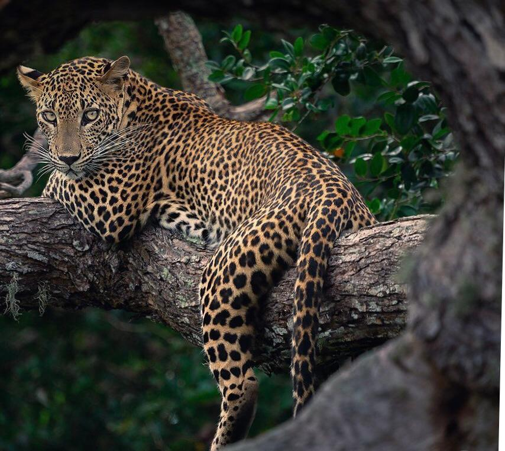
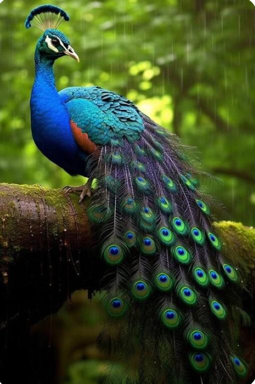
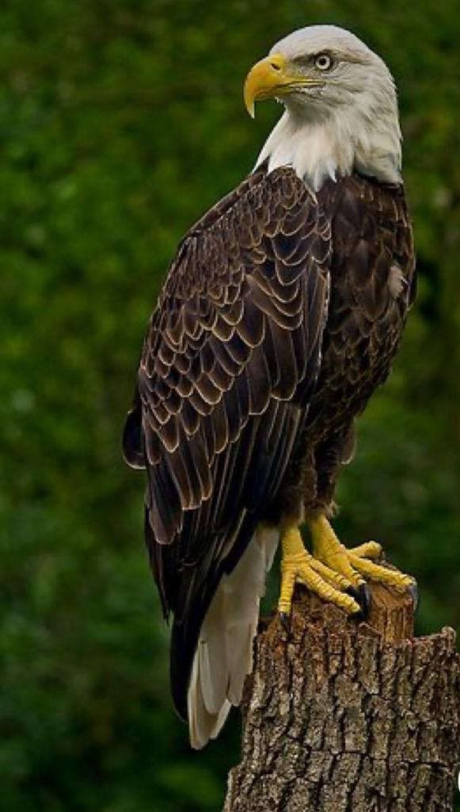

|  | The leopard in Sri Lanka is a specific subspecies known as the Sri Lankan leopard (Panthera pardus kotiya). It is native to the island and is considered the apex predator in its habitat. The Sri Lankan leopard is known for its agility, strength, and stealth, making it an efficient hunter. It has a golden coat with rosette patterns, which provide excellent camouflage in the jungle environment. Unfortunately, the Sri Lankan leopard is classified as endangered due to habitat loss and poaching. Efforts are being made to protect and conserve this magnificent species in Sri Lanka. |
|  | The peacock, native to Sri Lanka, is known for its vibrant plumage and is often seen in Yala National Park. The males display colorful feathers to attract mates, while the females have more subdued colors. Peacocks are symbolically associated with wisdom and transformation, representing the ability to turn poison into nourishment. They are linked to bodhisattvas, who aid humans in achieving enlightenment by transforming ignorance, desire, and hatred into spiritual growth. |
|  | The specific eagle found in Sri Lanka is the Serpent Eagle (Spilornis cheela). It is a medium-sized bird of prey known for its distinctive appearance and hunting behavior. The Serpent Eagle has a dark brown plumage with white underparts and a short, hooked beak. It is named after its diet, which primarily consists of snakes. This eagle is commonly found in forested areas and open habitats throughout Sri Lanka. It is known for its impressive soaring abilities and keen eyesight, which help it locate and capture its prey. |
.png) | CEYLON GREY HORNBILL - OCYCEROS GINGALENSII Of the two hornbills occurring in Sri Lanka, this is the smaller one. A locally common bird in all low country forests, well wooded areas and gardens. It occurs in both wet and dry zones and occasionally ascends the hills to about 1300 meters. It lives in pairs or small flocks. Like most hornbills. The female imprisons herself in a tree hole for incubation during the breeding season. Kitulgala is among the best places for one to see this bird. |
 | Sri Lankan Elephant is a distinct subspecies of the Asian Elephant and is indigenous to the island. The Sri Lankan Elephant can be described as being smaller in size than the African Elephant yet it is the largest of the three Asian subspecies. It is has a shoulder height between 2 and 3.5 m and weighs between 2000 and 5500 kg, with a darker skin tone and greater de-pigmentation patches on its body. The females are distinctively smaller than the male with females having short or no tusks with about 2% of the male populations being tuskers. It is believed that the Sri Lankan Elephant with its distinct physical characteristics is better looking when compared with its Asian cousins, the Indian Elephant and the Sumatran Elephant. |
 | The major factors that govern the distribution of butterfly species in the island include climate, topography and vegetation types. Most butterfly species in Sri Lanka are distributed island-wide. Some species occur in more than one bioclimatic zone, while certain others are restricted in their distribution. The five butterflies mentioned below are restricted to the Arid Zone (North), and inhabit the Wilpattu national park. |